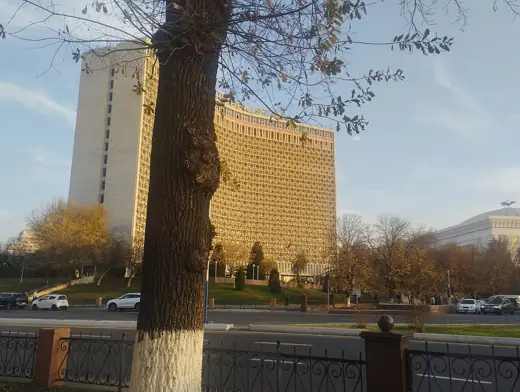

Buildings 62
Sort
 Price Tower1956 · Bartlesville
Price Tower1956 · Bartlesville Milwaukee Art Museum, Quadracci Pavilion2001 · Milwaukee
Milwaukee Art Museum, Quadracci Pavilion2001 · Milwaukee Palace of Justice (Punjab and Haryana High Court)1955 · Chandigarh
Palace of Justice (Punjab and Haryana High Court)1955 · Chandigarh State Library of Queensland2006 · Brisbane
State Library of Queensland2006 · Brisbane Gustavo Capanema Palace1945 · Rio de Janeiro
Gustavo Capanema Palace1945 · Rio de Janeiro EDP Headquarters2015 · Lisbon
EDP Headquarters2015 · Lisbon Hilton Istanbul1955 · Istanbul
Hilton Istanbul1955 · Istanbul Bienal Pavilion (Pavilhão Ciccillo Matarazzo)1954 · São Paulo
Bienal Pavilion (Pavilhão Ciccillo Matarazzo)1954 · São Paulo National Library Building2005 · Singapore
National Library Building2005 · Singapore
Hotel Uzbekistan1974 · Tashkent Parker Center1955 · Los Angeles
Parker Center1955 · Los Angeles SMUD Headquarters Building1961 · Sacramento
SMUD Headquarters Building1961 · Sacramento Advanced Engineering Building, University of Queensland2013 · Brisbane
Advanced Engineering Building, University of Queensland2013 · Brisbane Palace of Assembly1962 · Chandigarh
Palace of Assembly1962 · Chandigarh Mill Owners' Association Building1954 · Ahmedabad
Mill Owners' Association Building1954 · Ahmedabad Carpenter Center for the Visual Arts1963 · Cambridge
Carpenter Center for the Visual Arts1963 · Cambridge Curutchet House1953 · La Plata
Curutchet House1953 · La Plata Holyoke Center (Smith Campus Center)1966 · Cambridge
Holyoke Center (Smith Campus Center)1966 · Cambridge Torre BBVA Mexico2016 · Mexico City
Torre BBVA Mexico2016 · Mexico City Edifício Niemeyer1960 · Belo Horizonte
Edifício Niemeyer1960 · Belo Horizonte Itatiaia Building1957 · Campinas
Itatiaia Building1957 · Campinas India International Centre1962 · New Delhi
India International Centre1962 · New Delhi Malaysian Houses of Parliament1963 · Kuala Lumpur
Malaysian Houses of Parliament1963 · Kuala Lumpur San Miguel Corporation Building1984 · Mandaluyong
San Miguel Corporation Building1984 · Mandaluyong New York Times Building2007 · New York
New York Times Building2007 · New York Milam Residence1961 · Ponte Vedra Beach
Milam Residence1961 · Ponte Vedra Beach Unité d'Habitation1952 · Marseille
Unité d'Habitation1952 · Marseille Amorepacific Headquarters2017 · Seoul
Amorepacific Headquarters2017 · Seoul Deere & Company Administrative Center1964 · Moline
Deere & Company Administrative Center1964 · Moline Langer Eugen1969 · Bonn
Langer Eugen1969 · Bonn Parque Guinle1954 · Rio de Janeiro
Parque Guinle1954 · Rio de Janeiro Conjunto Nacional1958 · São Paulo
Conjunto Nacional1958 · São Paulo Akbar Bhawan (Akbar Hotel)1970 · New Delhi
Akbar Bhawan (Akbar Hotel)1970 · New Delhi Cité de Refuge (Salvation Army Hostel)1933 · Paris
Cité de Refuge (Salvation Army Hostel)1933 · Paris Atatürk Library1976 · Istanbul
Atatürk Library1976 · Istanbul Singapore Conference Hall1965 · Singapore
Singapore Conference Hall1965 · Singapore IBM Research Centre, La Gaude1962 · La Gaude
IBM Research Centre, La Gaude1962 · La Gaude Secretariat Building1958 · Chandigarh
Secretariat Building1958 · Chandigarh Copan Building1966 · Sao Paulo
Copan Building1966 · Sao Paulo Capitol Records Building1956 · Los Angeles
Capitol Records Building1956 · Los Angeles Beehive1981 · Wellington
Beehive1981 · Wellington QV11991 · Perth
QV11991 · Perth Independence Palace1966 · Ho Chi Minh City
Independence Palace1966 · Ho Chi Minh City Menara Mesiniaga1992 · Subang Jaya
Menara Mesiniaga1992 · Subang Jaya University of Ibadanc. 1955 · Ibadan
University of Ibadanc. 1955 · Ibadan Santa Monica Civic Auditorium1958 · Santa Monica
Santa Monica Civic Auditorium1958 · Santa Monica Florida State Capitol1977 · Tallahassee
Florida State Capitol1977 · Tallahassee Wurster Hall1964 · Berkeley
Wurster Hall1964 · Berkeley